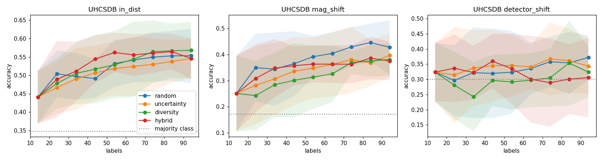
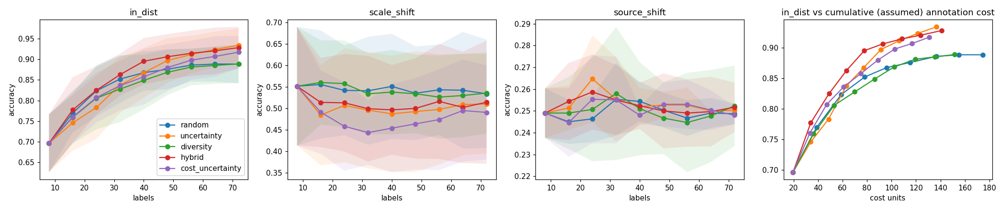
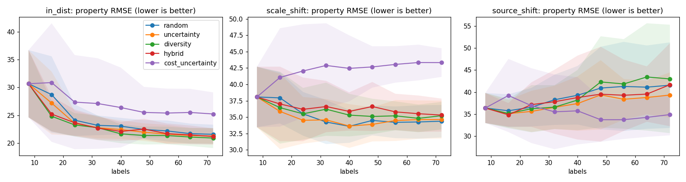

microscopy-active-learning
Representation learning and active learning for multi-scale scientific imaging: self-supervised and cross-modal embeddings, acquisition under cost and uncertainty, property surrogates, evaluated under scale and instrument shift. Code and README · Technical report · Full results
What is in the repo
- Seeded synthetic microstructure generator, with paired SEM and EBSD-like maps and a Hall-Petch-like property.
- SimCLR-style and CLIP-style (SEM+EBSD) pretraining; handcrafted-feature and random-init baselines.
- Pool-based active learning: random, uncertainty, diversity (k-center), hybrid, cost-aware; GP property surrogate with uncertainty.
- Calibration (ECE, interval coverage), paired Wilcoxon tests with Holm correction and bootstrap CIs over 10 seeds.
- Real-data pipeline for UHCSDB with specimen-grouped splits and real magnification and detector shifts; 32 tests and CI.
Real data: UHCSDB (7-class microconstituent, accuracy at 94 labels, 10 seeds)
Majority-class accuracy: 0.348 in-distribution, 0.170 magnification shift, 0.300 detector shift.
| encoder | strategy | in-dist | magnification shift | detector shift (SE→BSE) |
|---|---|---|---|---|
| contrastive CNN | random | 0.553±0.074 | 0.428±0.103 | 0.372±0.073 |
| contrastive CNN | uncertainty | 0.545±0.052 | 0.397±0.083 | 0.343±0.091 |
| contrastive CNN | diversity | 0.568±0.078 | 0.381±0.061 | 0.324±0.085 |
| contrastive CNN | hybrid | 0.546±0.054 | 0.375±0.074 | 0.306±0.131 |
| random-init CNN | random | 0.563±0.072 | 0.354±0.084 | 0.401±0.164 |
| handcrafted, 128 px | random | 0.608±0.072 | 0.406±0.061 | 0.299±0.135 |
| DINOv2-small (frozen) | random | 0.722±0.068 | 0.569±0.131 | 0.666±0.178 |
| DINOv2-base (frozen) | random | 0.770±0.050 | 0.602±0.158 | 0.708±0.122 |
| DINOv2-base (frozen) | hybrid | 0.772±0.059 | 0.641±0.147 | 0.737±0.140 |
Representation quality dominates: frozen pretrained DINOv2 features (GPU runs) lift in-distribution accuracy from about 0.55-0.61 to 0.72-0.77 and detector-shift accuracy from near the majority-class rate (0.30-0.40) to 0.67-0.71. Small CNNs trained from scratch on the unlabeled pool were not better than random-init CNNs or handcrafted texture features, and no active-learning strategy is distinguishable from random after Holm correction.

Synthetic benchmark: active learning under shift
On synthetic data the instrument shift sits at chance (0.25 for 4 classes) while the classifier is about 95% confident: calibrated, shift-aware uncertainty is the open problem. A normalisation plus strong-augmentation fix helped synthetically but did not transfer to the real detector shift.

Property surrogate (synthetic)
A GP on embeddings predicts a synthetic hardness: R² about 0.70 in-distribution, 90% intervals about 0.88 covered in-distribution but only about 0.66 to 0.71 under shift. No active strategy beats random.

Second real source: Aachen-Heerlen steel SEM (1,705 images, steel sample types held out)
Frozen DINOv2-base features, 90 labels, 10 seeds. The martensite-austenite island area fraction (from expert polygons) is predicted with R² about 0.34 (RMSE 0.057 against 0.077 for the mean predictor) in distribution and 0.39 under a cut-direction shift, but only about 0.10 under tilt. Transformation temperature of unseen steels is at the majority-class rate (0.49 vs 0.44). No acquisition strategy improves on random; diversity and hybrid selection reduce the coverage of 90% intervals from 0.87 to 0.75-0.76.
Data and citation
Real data: UHCSDB (DeCost et al., Integr. Mater. Manuf. Innov. 6, 197-205, 2017, CC BY 3.0 US), used via the Zenodo-archived mirror doi:10.5281/zenodo.23050463 because the original NIST host was unreachable. Aachen-Heerlen: Iren et al., Sci. Data 2021, CC0. Datasets are not redistributed here.
Author: Vishesh Srivastava. MIT licence.